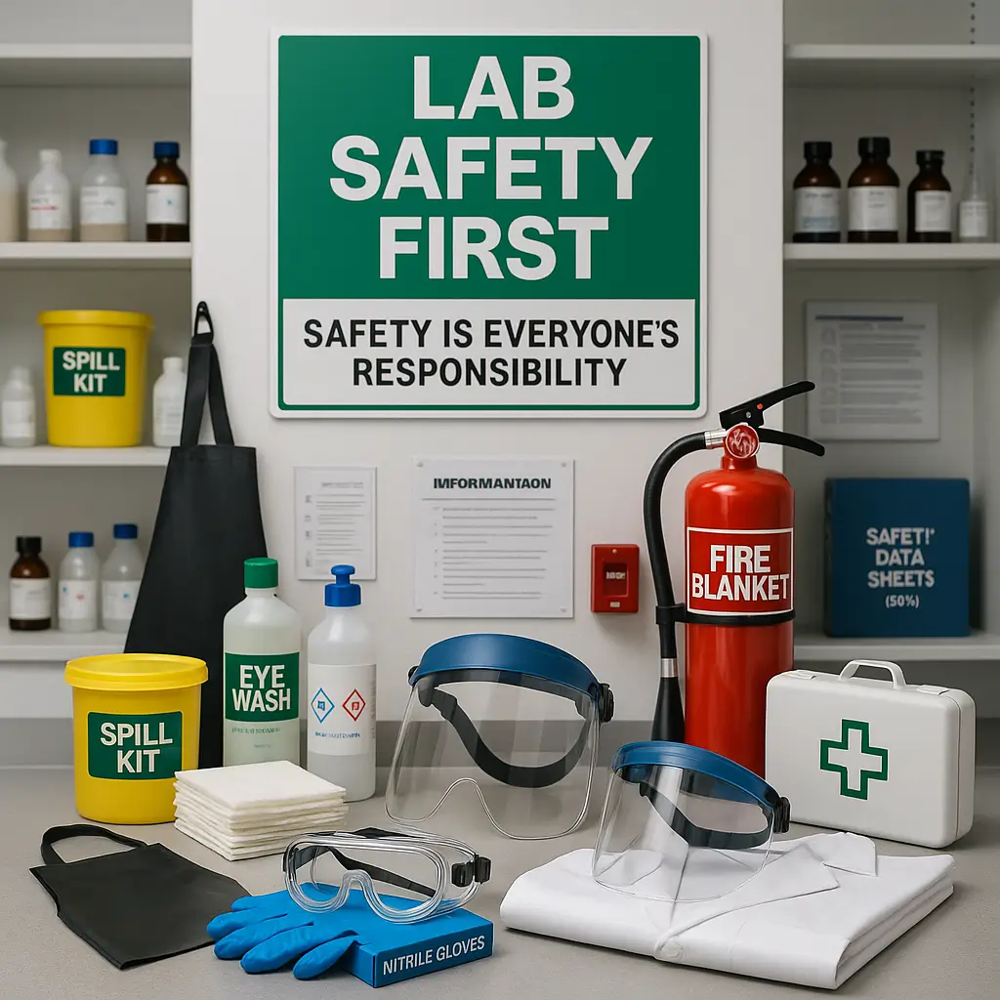

Consumables and disposables
Laboratory plastics, sterile items, sample handling materials, and everyday consumables for dependable workflow support.
- Sample containers and racks
- Tip systems and transfer tools
- Disposable products for clean operations
The site groups the business by what buyers actually look for: consumables, instruments, mobility equipment, safety, and specialty support for demanding environments.
Each card includes a photographic cue, short summary, and practical bullet points so the page feels more like a premium procurement brochure than a generic brochure site.
Laboratory plastics, sterile items, sample handling materials, and everyday consumables for dependable workflow support.

Classic laboratory essentials selected for quality, repeatability, and clean visual presentation in teaching or professional labs.

Compact and high-performance equipment that supports laboratories needing accurate measurement, sample prep, and analysis.

Products and infrastructure that help R&D teams move from idea to data with fewer supply interruptions and better organization.

Operational support items that contribute to patient comfort, movement, and care environment readiness in clinical spaces.

Protective supplies and hazardous waste handling solutions for laboratories and institutions where safety protocols matter.
The process section makes the buying journey feel simple. It is easy to understand, easy to repeat, and easy to expand later with RFQ or project procurement flows.
Clients submit a category, specification list, or project need so the team can interpret the request accurately.
The right product family is matched to the use case, whether it is clinical, academic, industrial, or environmental.
Proposals can be structured around budget, product availability, lead times, and any institutional purchasing requirements.
The site language reinforces a partner mentality: supply is only complete when the client is comfortable with the outcome.
Supports everyday operations with essential equipment, consumables, and maintenance-ready product families.
Helps teaching and testing environments stay supplied with technical products and repeat-order items.
Provides supplies for control testing, routine analysis, and quality assurance tasks in industrial settings.
These blocks make the site feel detailed and production-ready, while preserving a clean premium layout on desktop and mobile screens.
Simple category architecture makes it easier for visitors to browse by need rather than by a long, unstructured inventory list.
Content can support documentation-heavy environments where quality confidence and repeatability matter in every purchase.
The visual system is flexible enough for future category expansions, featured products, or sector-specific landing pages.
Premium visual hierarchy and clear sectioning help decision-makers find the right information without friction.